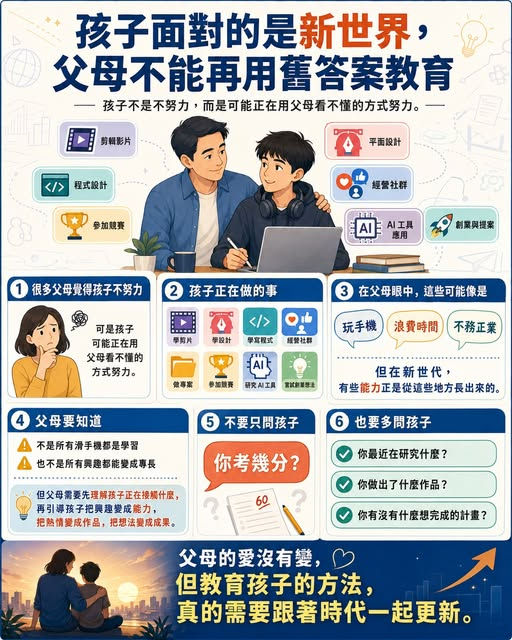

《看懂制度，選對世界》第一集
孩子面對的是新世界，父母不能再用舊答案教育
很多父母覺得孩子不努力。但有時候，孩子不是不努力，而是正在用父母看不懂的方式努力。他們可能在學剪片、學設計、學寫程式、經營社群、做專案、參加競賽、研究 AI 工具，甚至嘗試把一個小小的想法變成創業計畫。

很多父母覺得孩子不努力。但有時候，孩子不是不努力，而是正在用父母看不懂的方式努力。他們可能在學剪片、學設計、學寫程式、經營社群、做專案、參加競賽、研究 AI 工具，甚至嘗試把一個小小的想法變成創業計畫。在父母眼中，這些看起來可能像是「玩手機」、「浪費時間」、「不務正業」。可是，在這個新世代，很多未來需要的能力，正是從這些地方慢慢長出來的。當然，不是所有滑手機都是學習，也不是所有興趣都能變成專長。
但父母真正需要做的，不是第一時間否定，而是先理解孩子正在接觸什麼，再引導孩子把興趣變成能力，把熱情變成作品，把想法變成成果。過去，我們常問孩子： 「你考幾分？」 但現在，我們也應該多問： 「你最近在研究什麼？」 「你做出了什麼作品？」 「你有沒有什麼想完成的計畫？」 孩子面對的是一個全新的世界。父母的愛沒有變，但教育孩子的方法，真的需要跟著時代一起更新。孩子需要的，是願意更新思維的父母。願意理解新世界的父母。願意從「控制孩子」轉為「陪孩子升級」的父母。
結語｜建立能進、能轉、能退、能比較的升學策略
國際升學不應只是追逐一張名校錄取通知，而是建立一條學生能理解、家庭能承擔、環境改變時仍能調整的路徑。
當制度、政策與市場都在變，最有價值的能力不是預測唯一答案，而是持續比較選項、核對資訊，並把學生的興趣、能力與長期發展放回決策中心。
願這本書成為家庭展開對話的起點：先理解世界，再選擇自己的方向。
Peter の國際教育講座